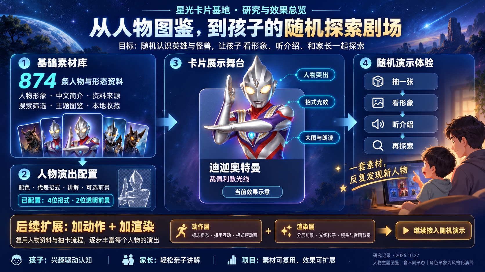

人物素材库
形象、中文简介与来源随图鉴组织。可以搜索和筛选，打开网页就能开始探索。
008 · 亲子探索 / 人物图鉴 / 网页演出
孩子喜欢的是人物和故事。我们把奥特曼与怪兽的形象、简介和资料来源整理为基础素材，再用卡片舞台、招式光效和讲解，让每一次随机相遇都成为认识新人物的机会。

形象、中文简介与来源随图鉴组织。可以搜索和筛选，打开网页就能开始探索。
按人物关联配色、代表招式、原创讲解和可选透明前景，让特色表现独立于人物资料。
通过人物突出、页面光效、大图与设备朗读，把资料转成看得清、听得懂的展示。
抽一张、看形象、听介绍，再一起聊聊人物与故事。同一套素材可以反复探索。
支持人物搜索、分类、随机抽取、连续抽取避开上一条、大图和主动语音讲解；也可以整理个人收藏并导出备份。现有前景是静态图片，招式使用页面光效演绎，讲解由设备合成语音朗读。
后续扩展 · 尚未实现
逐步增加标志姿态、挥手互动和招式短动画。按人物制作动作素材，接入播放控制与演出顺序。
丰富分层前景、光线粒子、镜头和音画节奏。优先打磨孩子喜欢的人物，再扩展到更多角色。
继续复用人物资料与抽卡流程，逐个丰富人物演出。下一阶段需要实际制作和接入动作、渲染素材，当前未覆盖所有人物的专属演出。
对孩子 · 用喜欢的人物带动认知和表达
对家长 · 随机展示，轻松开展亲子讲解
对项目 · 素材可复用，人物效果可持续扩展